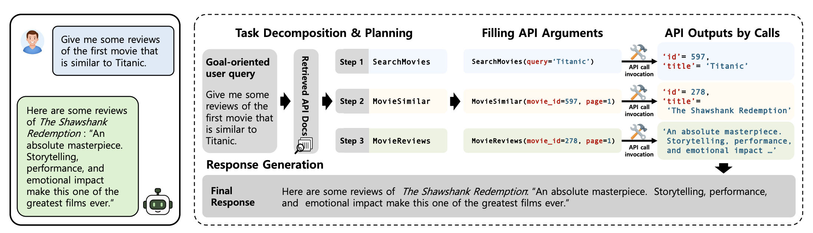
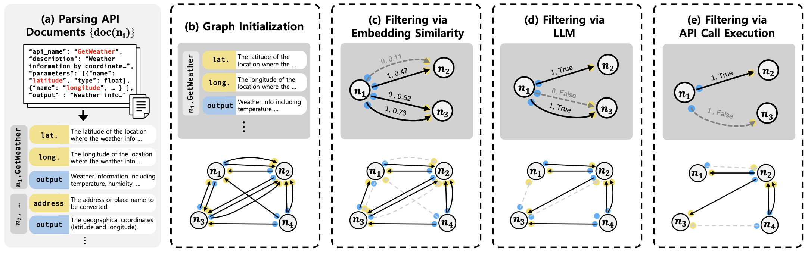
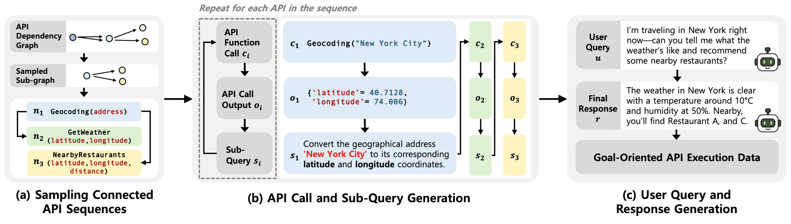
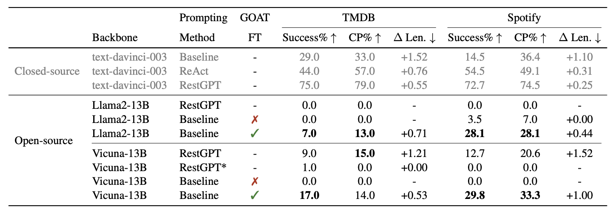
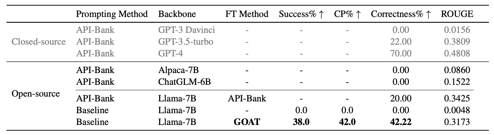
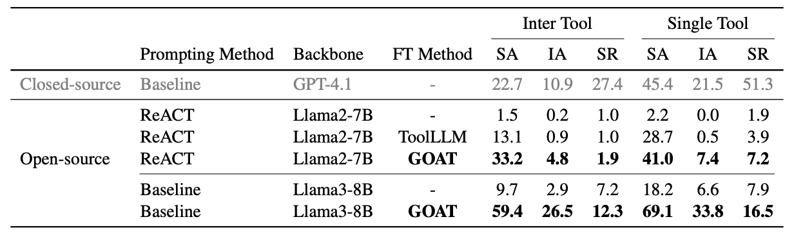

Large language models (LLMs) have evolved from pure text generators into interactive agents capable of invoking external tools. However, LLM agents still struggle with goal-oriented queries, which require decomposing high-level objectives into sequences of interdependent API calls with accurate planning and execution. Current approaches rely on zero-shot evaluation due to the absence of training data; while proprietary models such as GPT-4 exhibit strong reasoning capabilities, smaller open-source models remain ineffective at complex tool use. To address this limitation, we propose a novel training framework GOAT, that enables fine-tuning LLM agents without human annotation. GOAT automatically synthesizes goal-oriented API execution data from API documents using a novel call-first generation paradigm, that constructs training data based on executed API call sequences. Through extensive experiments, we show that GOAT-trained agents achieve state-of-the-art performance across multiple existing goal-oriented benchmarks. In addition, we introduce GOATBench, a new goal-oriented API execution benchmark, and demonstrate that agents trained with GOAT also excel in this setting. These results highlight GOAT as a practical path toward building robust open-source LLM agents capable of complex reasoning and tool use.



GOAT automatically constructs training data for goal-oriented tool-use agents from raw API documentation. First, it parses each API document into structured input and output specifications, then builds an over-complete API dependency graph where each edge represents a possible relation between the output of one API and the input argument of another. This graph is progressively refined through embedding-based filtering, LLM-based validation, and real API execution, leaving only reliable and executable API dependencies.
Based on the refined dependency graph, GOAT samples connected API sequences and follows a call-first generation strategy. Instead of asking an LLM to infer API calls from a user query, GOAT first instantiates and executes API calls, obtains real outputs, and then abstracts the completed workflow into a goal-oriented user query and final response. The resulting synthetic data is used to fine-tune both the LLM agent and the API retriever, enabling the agent to learn planning, argument filling, API execution, and response generation for complex goal-oriented tasks.



@inproceedings{min-etal-2026-goat,
title = "{GOAT}: A Training Framework for Goal-Oriented Agent with Tools",
author = "Min, Hyunji and
Jung, Sangwon and
Sung, Junyoung and
Lee, Dosung and
Han, Leekyeung and
Seo, Paul Hongsuck",
editor = "Liakata, Maria and
Moreira, Viviane P. and
Zhang, Jiajun and
Jurgens, David",
booktitle = "Findings of the {A}ssociation for {C}omputational {L}inguistics: {ACL} 2026",
month = jul,
year = "2026",
address = "San Diego, California, United States",
publisher = "Association for Computational Linguistics",
url = "https://aclanthology.org/2026.findings-acl.1150/",
pages = "22934--22963",
ISBN = "979-8-89176-395-1",
abstract = "Large language models (LLMs) have evolved from pure text generators into interactive agents capable of invoking external tools. However, LLM agents still struggle with goal-oriented queries, which require decomposing high-level objectives into sequences of interdependent API calls with accurate planning and execution. Current approaches rely on zero-shot evaluation due to the absence of training data; while proprietary models such as GPT-4 exhibit strong reasoning capabilities, smaller open-source models remain ineffective at complex tool use. To address this limitation, we propose a novel training framework GOAT, that enables fine-tuning LLM agents without human annotation. GOAT automatically synthesizes goal-oriented API execution data from API documents using a novel call-first generation paradigm, that constructs training data based on executed API call sequences. Through extensive experiments, we show that GOAT-trained agents achieve state-of-the-art performance across multiple existing goal-oriented benchmarks. In addition, we introduce GOATBench, a new goal-oriented API execution benchmark, and demonstrate that agents trained with GOAT also excel in this setting. These results highlight GOAT as a practical path toward building robust open-source LLM agents capable of complex reasoning and tool use."
}